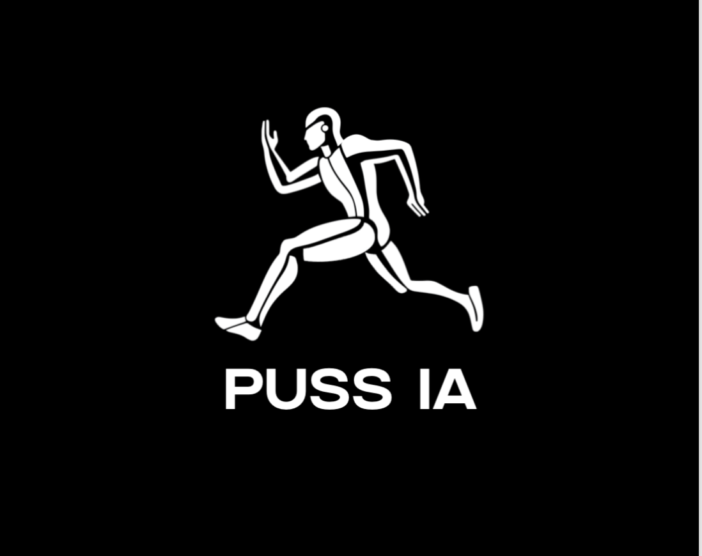

<!-- Encabezado principal -->
<header style="
  background-color: #1a1a1a;
  height: 100vh;
  display: flex;
  align-items: left side;
  justify-content: left side;
  text-align: left side;
  color: #1a1a1a;
  padding: 40px;
">
  <div>
    


<!DOCTYPE html>
<html lang="es">
<head>
  <meta charset="UTF-8">
  <title>Mi Landing</title>
  <style>
    body {
      font-family: Arial;
      text-align: center;
      padding: 50px;
      background: #f5f5f5;
    }
    button {
      padding: 15px 25px;
      font-size: 16px;
      background: black;
      color: black;
      border: none;
      cursor: pointer;
    }
  </style>
</head>
<body>


</body>
</html>

<!-- Sección gancho principal -->
<section style="background-color:#1a1a1a; color:white; text-align:center; padding:100px 20px;">
  <h1 style="font-size:2.5em; margin-bottom:20px; line-height:1.2;">
    Si tu progreso se estanca, no es tu culpa… hasta ahora
  </h1>
  <p style="font-size:1.2em; margin-bottom:40px; max-width:600px; margin-left:auto; margin-right:auto;">
    Puss IA diseña tus entrenamientos diarios según tu objetivo, tu progreso y tu constancia, basandose en la IA.
  </p>
  <a href="#formulario" style="background-color:#ff3b3f; color:white; padding:15px 30px; text-decoration:none; font-size:1.2em; border-radius:8px; transition:0.3s;">
    Quiero cambiar
  </a>
</section>

<!-- Sección de aplicaciones / situaciones -->
<section style="background-color:#1a1a1a; color:white; padding:60px 20px; text-align:center;">
  <h2 style="font-size:2em; margin-bottom:40px;">¿Para quién es Puss IA?</h2>
  
  <ul style="list-style:none; padding:0; max-width:700px; margin:0 auto; text-align:left;">
    <li style="margin-bottom:20px; font-size:1.2em;">💪 Eres principiante y no sabes por dónde empezar</li>
    <li style="margin-bottom:20px; font-size:1.2em;">📉 Te estancas y quieres progresar de verdad</li>
    <li style="margin-bottom:20px; font-size:1.2em;">⏱️ No tienes tiempo para investigar entrenamientos</li>
    <li style="margin-bottom:20px; font-size:1.2em;">🏋️‍♂️ Te cuesta seguir la sobrecarga progresiva</li>
    <li style="margin-bottom:20px; font-size:1.2em;">🎯 Buscas resultados adaptados a tu objetivo</li>
    <li style="margin-bottom:20px; font-size:1.2em;">📈 Quieres motivación y seguimiento de tu progreso</li>
    <li style="margin-bottom:20px; font-size:1.2em;">🤓 Quieres entrenar de forma inteligente, no más duro</li>
  </ul>
</section>


